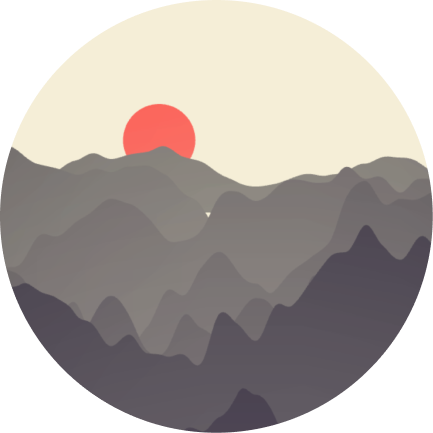
「望庐山瀑布」
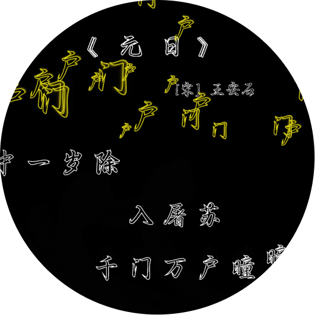
「元日」
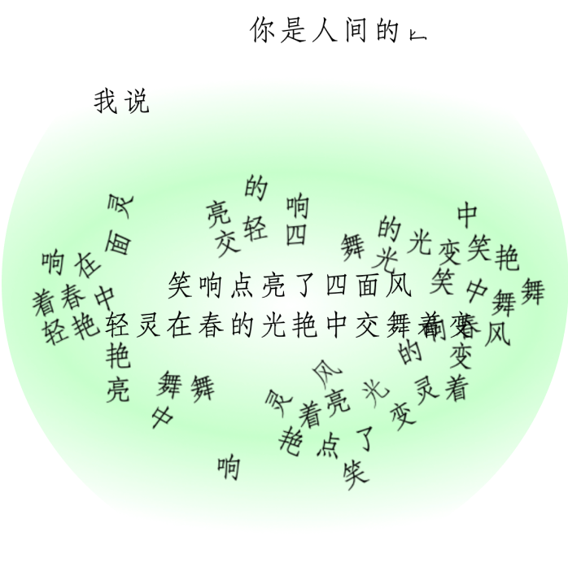
「你是人间四月天」
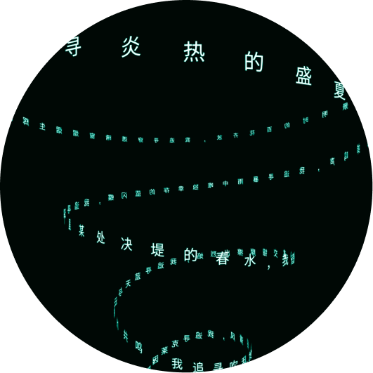
「追寻」
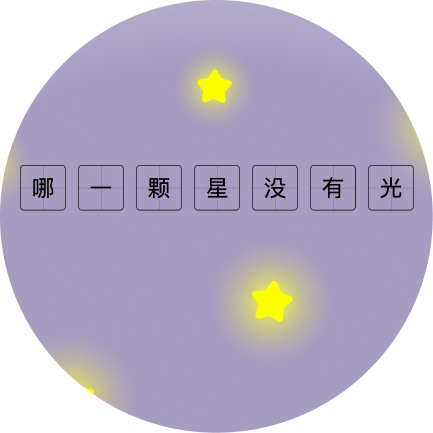
「繁星」
诗意交互
基于前端web技术的动态诗歌创作研究
数字技术的发展和传播媒体的演变，给传统诗歌文学的发展带来了新的挑战和机遇...
...
交互——作为人们理解事物的方式和数字世界的重要研究领域，能否为诗歌的发展注入新活力？
于是，本研究选择了交互能力强大、内容传播便捷的前端web技术，旨在探索如何用技术赋能文化：提升诗歌表现力，创造新型的数字诗歌阅读体验。
交互——作为人们理解事物的方式和数字世界的重要研究领域，能否为诗歌的发展注入新活力？
于是，本研究选择了交互能力强大、内容传播便捷的前端web技术，旨在探索如何用技术赋能文化：提升诗歌表现力，创造新型的数字诗歌阅读体验。
通过对传统诗歌概念“画面性”与“音乐性”、通用概念“空间”与“时间”等的解构和重构，并结合文献阅读、数字诗歌案例分析、web技术探索和demo实验等方法，我提出了一套基于web前端技术的诗歌创作理论体系，涵盖“内容表达”、“组成结构”、“阅读方式”三个层面，探索了数字诗歌独特的视听觉元素、时空结构类型和交互阅读方式。
内容表达
-画面性
-音乐性
组成结构
-组成元素
-空间结构
-时间结构
阅读方式
-作者主导
-读者主导
-算法主导
画面性
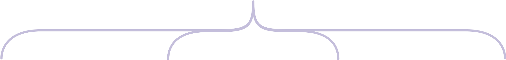
环境
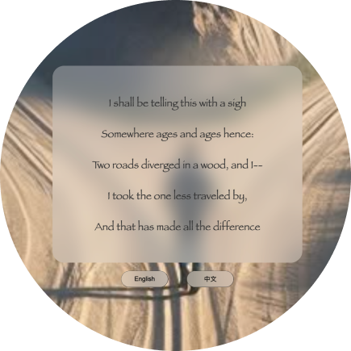
「未选择的路」
载体
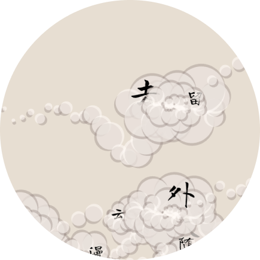
「小窗幽记」
诗形
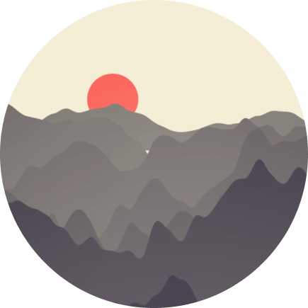
「望庐山瀑布」
诗文
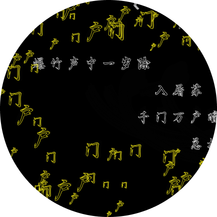
「元日」
音乐性
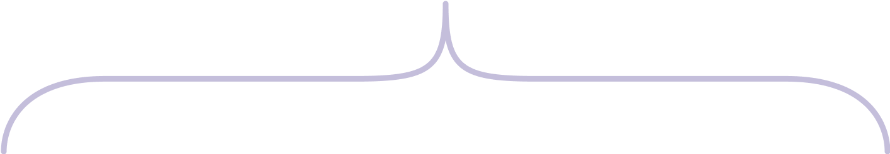
节奏
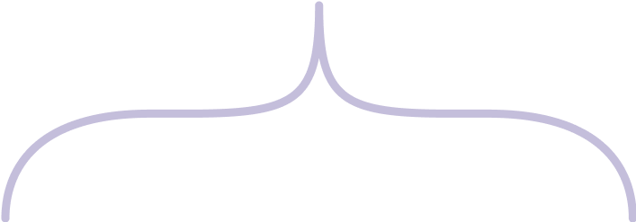
速率
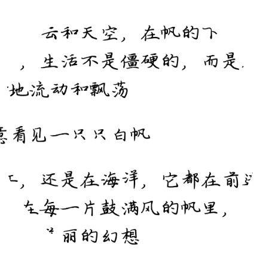
「帆」
重音
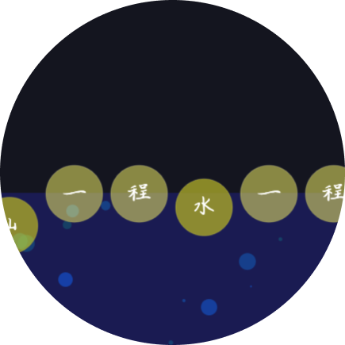
「长相思」
韵律
发声
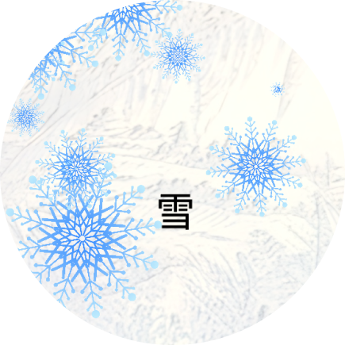
「晨对暮」
音调
韵脚
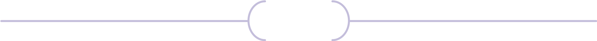
组成
元素性质
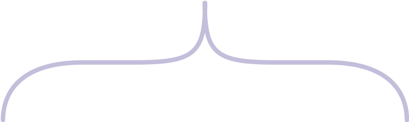
字符类
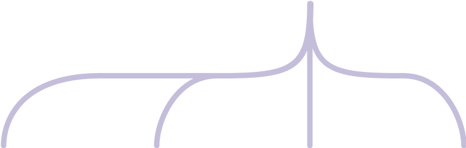
文字
符号
数字
表情
形状类
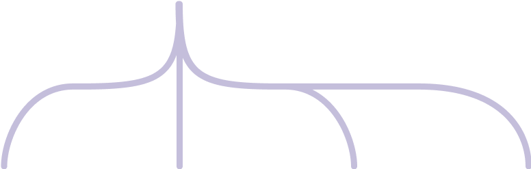
图形
图像
动图
视频
技术实现
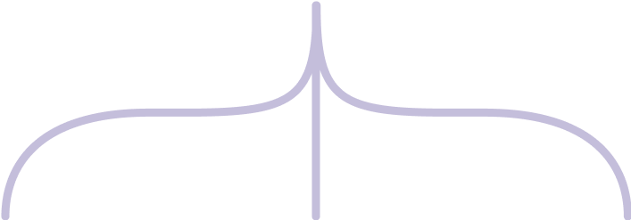
普通DOM
SVG
Canvas
空间结构
层叠型
延展型
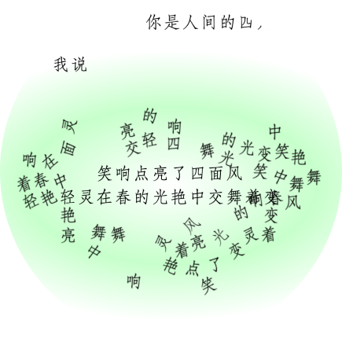
「四月天」
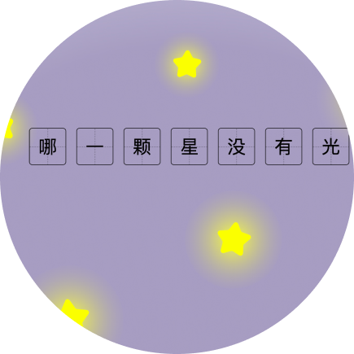
「繁星」
时间结构
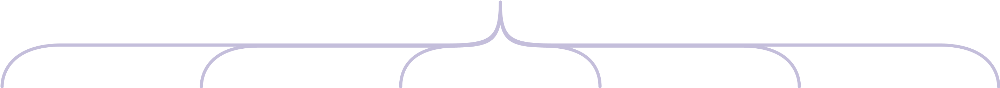

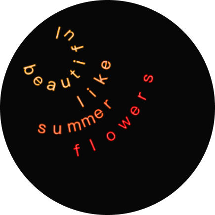
「飞鸟集」

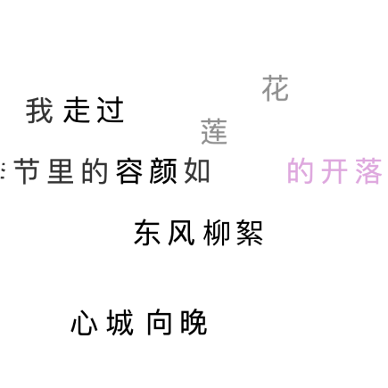
「错误」

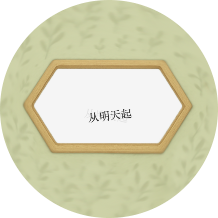
「春暖花开」


阅读方式
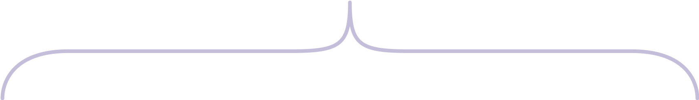
作者主导
「帆」
「晨对暮」
算法主导
「小窗幽记」
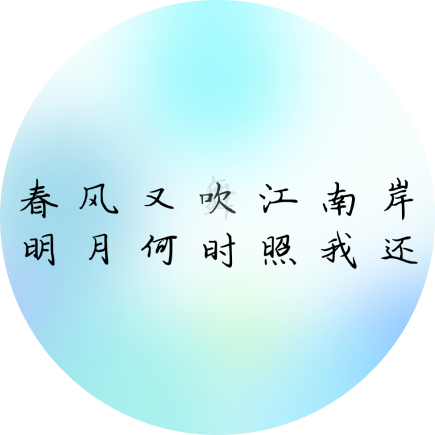
「泊船瓜洲」
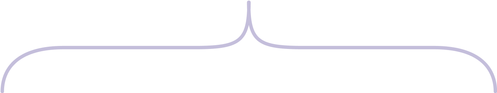
基于规则
「春暖花开」
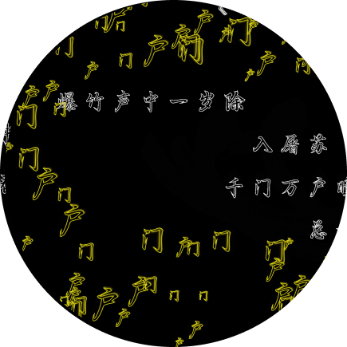
「元日」
基于理解
「繁星」
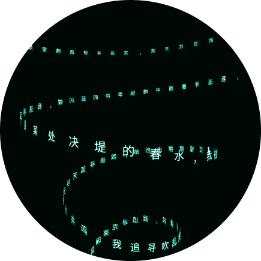
「追寻」